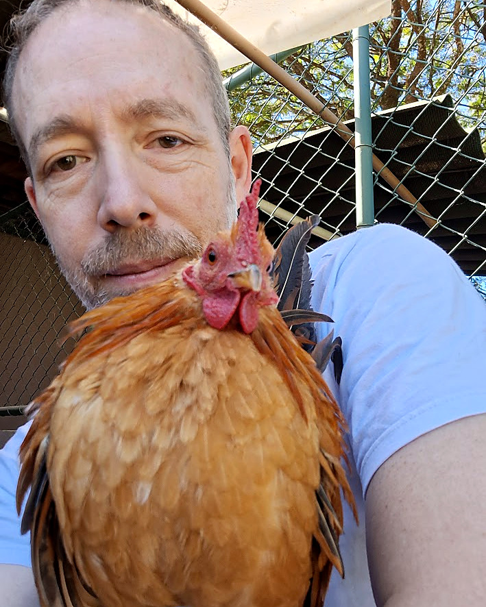
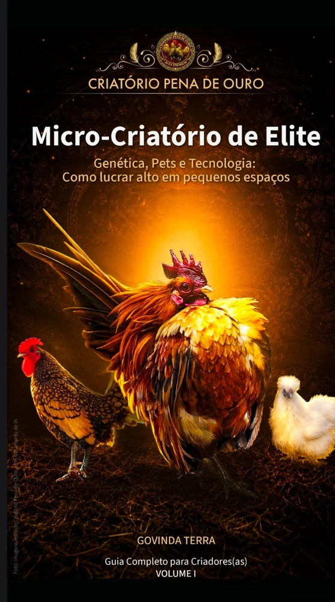

Criação familiar de galinhas ornamentais. Anotamos o módulo de origem de cada ave — então sabemos, e mostramos, de onde ela veio.

Talvez você tenha começado com a mesma dúvida que eu: dá para ter qualidade de vida e uma renda extra morando na cidade, sem um sítio enorme?
Sou o Govinda. Passei muitos anos como gestor público e sou membro do Instituto Avis — uma trajetória que sempre me exigiu olhar analítico, metas e eficiência. Quando as aves ornamentais entraram na minha vida, levei essa mesma cabeça para o quintal.
Não queria só criar galinhas. Queria construir um modelo: eficiente, limpo e rentável. Uma avicultura de elite que não depende de hectares, e sim de genética, estratégia e uso inteligente da tecnologia.
É isso que você vê aqui. Cada módulo tem uma letra na porta, e cada ave que sai daqui carrega essa origem registrada. Não é burocracia — é o que mantém as famílias genéticas separadas, evita consanguinidade e permite responder, quando alguém pergunta, exatamente de onde veio aquela ave.
Se você já acompanha o dia a dia no Instagram ou no TikTok, já viu tudo o que está aqui. O site só organiza.
Quer montar o seu? Escrevi um ebook sobre o método.
Antes de escolher uma raça, vale saber o que você quer da ave. Uma galinha de colo não é a mesma que uma boa poedeira — e quase ninguém conta isso antes da compra. Aqui estão as raças mais procuradas, com o que cada uma faz bem e o que faz mal.
As notas de 0 a 10 são orientativas e servem para comparar raças entre si, não para prever o resultado de uma ave específica. Linhagem, manejo, alimentação e clima mudam bastante o desempenho — inclusive dentro da mesma raça.
Aqui estão os reprodutores de cada módulo e as aves disponíveis no momento. Toque em qualquer uma para ver as fotos e a origem completa.
Cada módulo do criatório é uma família genética separada, com um galo e um grupo de matrizes. Toda ave que nasce aqui carrega a identificação do módulo de origem, então dá para saber de qual galo e de qual grupo de matrizes ela veio.
Das raças que temos em casa, em várias cores de casca. É preciso agendar — a incubação fica com você.
Com o módulo de origem identificado. Saem a partir dos 10 dias, mas recomendamos esperar os 21: é quando o pintinho ganha força e passa da fase crítica.
Já passada a fase mais delicada, com o padrão da raça começando a aparecer.
Em pintinho não dá para garantir se é macho ou fêmea — só depois que a ave se define. Preferimos avisar antes a prometer o que não podemos cumprir.
Aves que ficariam no nosso plantel. Poucas por ano, sob consulta.
Entre na lista e receba o aviso do lote antes de ele ir para as redes.
Plantel pequeno, em casa. Dá para conhecer cada ave e perceber quando alguma coisa está diferente.
Módulo de origem anotado. Sabemos de qual família veio cada ave que sai daqui.
Cada módulo mantém uma linha de sangue distinta. Ave nascida num módulo não volta a reproduzir nele.
O criatório aparece todos os dias no Instagram e no TikTok. Nada aqui é foto de banco de imagens.
Quem responde no WhatsApp é quem cuida das aves. Sem intermediário, sem atendente.
Vê o catálogo, manda mensagem citando a ave ou a raça que te interessou.
Falo o que tenho disponível, o valor e o prazo. Se for reservar, combinamos o sinal.
Aves são retiradas aqui ou entregues no DF, combinado pelo WhatsApp. Para fora do DF, só enviamos ovos férteis, pelos Correios. Vão pelos Correios, em plástico bolha e protegidos um a um.
Fico à disposição no WhatsApp para dúvidas de manejo. Gosto de saber como a ave está.
Entre na lista e receba o aviso das próximas ninhadas antes de elas irem para o Instagram. Quem está aqui escolhe primeiro.
Ao enviar, abre uma conversa no WhatsApp já preenchida.
Sim. Criamos aqui no Park Way, em Brasília – DF. A retirada é combinada pelo WhatsApp, aqui ou com entrega no DF. Para fora do DF, enviamos apenas ovos férteis pelos Correios. São várias raças — Sedosa, Brahma, Serama, Ayam Cemani, Marans e outras — cada ave com o módulo de origem registrado.
Não prometo percentual, e desconfie de quem promete. A eclosão depende muito da sua incubadora, da calibração dela, do transporte e do seu manejo — coisas que não estão sob meu controle. O que está sob meu controle eu garanto: os ovos são frescos, coletados poucos dias antes do envio, vêm de matrizes em postura e são embalados com cuidado. Se você é iniciante em incubação, me chame antes de comprar que eu te explico o que costuma dar errado.
No Distrito Federal, combinamos entrega ou retirada direto pelo WhatsApp. Para fora do DF, enviamos ovos férteis pelos Correios, embalados em plástico bolha e protegidos um a um. Ave viva não vai pelos Correios.
Cada módulo do criatório tem uma origem própria, anotada na ficha da ave e mostrada aqui no catálogo. Quando entra sangue novo, ele vem de criatório identificado e passa por um período de separação antes de entrar no plantel.
Pintinho a partir dos 10 dias. Mas a recomendação honesta é esperar os 21 dias: é quando ele ganha força e passa da fase mais crítica. Quem tem pressa leva antes; quem quer segurança espera.
Me chame no WhatsApp citando o código da ave ou a raça. Combinamos o valor e a forma de reserva. Quando a ninhada ainda não nasceu, entro em contato assim que os pintinhos estiverem prontos.
A criação é em casa, então visita é sempre combinada antes pelo WhatsApp. Peço que quem for visitar não tenha estado em outro criatório de aves nas 24 horas anteriores — é um cuidado simples que evita levar problema de um plantel para outro.
Escrevi o método que usei para transformar um quintal em criatório: genética, pets e tecnologia aplicados a pequenos espaços.

Conhecer o ebookCriamos em casa, no Park Way. O endereço completo eu passo pelo WhatsApp na hora de combinar a visita.
Atendimento e visitas: tudo combinado pelo WhatsApp. Me chame e a gente acerta o melhor dia e horário.